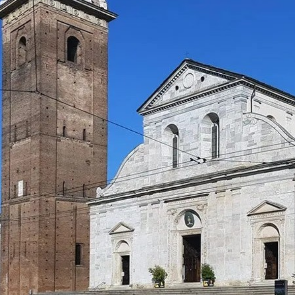
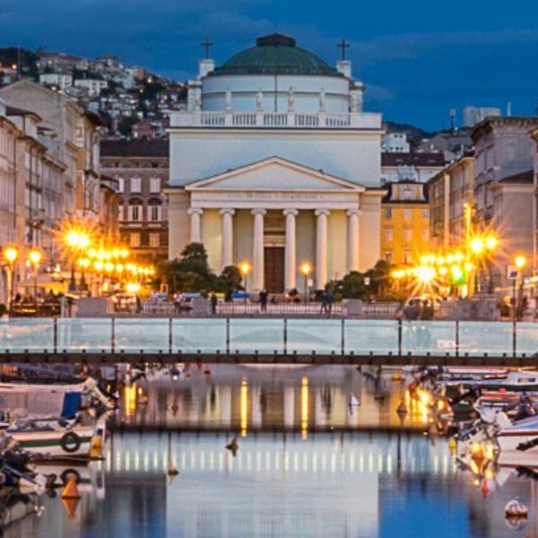
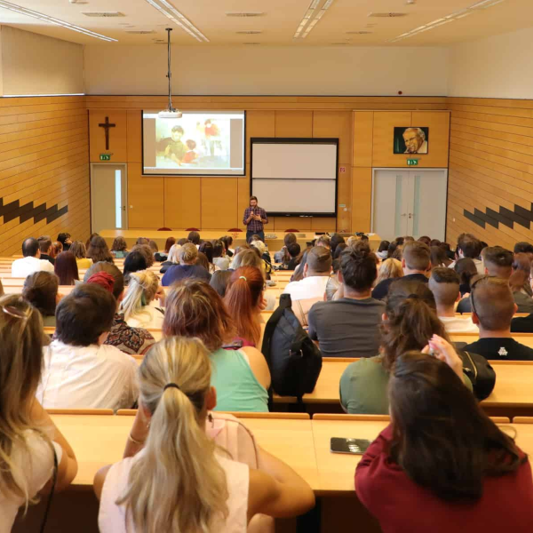

Ez a weboldal egy menünek szolgál ami tartalmazza a weboldal projekteknek elérhetőségét amiket a Számalk-Szalézi Technikum és Szakgimnázium diákjai készítettek, nagyrészt az Olaszországi kirándulással kapcsolatban.

Torinói dóm
A torinói dóm Torino belvárosának kiemelkedő vallási központja, amely érdekes látnivalókat és történelmi emlékeket rejt.

Trieszt
Trieszt gazdag történelmű, ma is élénk és sokszínű város, amely különleges hangulatával és szépségével vonzza a látogatókat.

Szalézi pedagógia
A szalézi pedagógia a fiatalok szeretetteljes nevelésére és személyes fejlődésének támogatására helyezi a hangsúlyt.
Don Bosco fiatalkora
Don Bosco fiatalkora és életútjának kezdetei megmutatják, hogyan formálódott hivatása és küldetése.
Torinó
Torinó gazdag történelmű és jelentős város, amely fontos kulturális és városi központ Észak-Olaszországban.